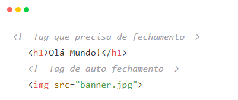
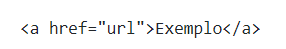

16 de outubro de 2022.
A primeira geração de computadores surgiu em 1944, eles eram enormes ocupavam uma sala inteira e pesavem toneladas. A segunda geração foi entre 1959 a 1965 com o surgimento dos transitores e os computadores ficaram menores e conseguiamos movê-los de uma sala para outra. A terceira geração foi entre 1965 e 1970 com o circuito integrado, sugirndo o transitor, os capacitadores e os resistores.A quarta geração iniciou a partir de 1971 com máquinas menore, o surgimento do Smartphone e do mouse.
Antes do surgimento da internet tinhamos o telégrafo que através de uma sequência pré estabelecida transmitia uma mensagem. Com a guerra fria em 1950 surgiu o ENIAC com a finalidade de computar trajetórias táticas que exigiam conhecimento substancial em matemática com mais agilidade. Com o passar dos anos e devidos as necessidades a primeira semente foi plantada por Joseph Carl Robnett Lickelider, ele teorizou sobre uma rede onde todos poderiam se comunicar através dela. A primeira conexão estabelecida foi feita em 29/10/1969, foi enviado a palavra LOGIN mas foi recepcionado apenas LO, ou seja, a primeira conexão e a primeira queda (perda de conexão) foram no mesmo dia. Após o surgimento do TCP IP em 1989 Tim Berners-Lee viu a oportunidade de unir hipertexto com TCP/IP e criar o world Wide Web mais conhecido como WWW.
Em toda essa trajetória temos alguns nomes para destacar que contribuiram muito com a evolução da internet:
Vale muito a pena pesquisar um pouco sobre cada um deles, ambos tiveram uma participação muito importante na evolução da comunicação. Aproveito aqui para fazer um gancho e deixar uma frase inspiradora de Steve Jobs que eu gosto muito:
“A única maneira de fazer um excelente trabalho é amar o que você faz. Se ainda não encontrou, continue procurando.”
Continuando...
Quando falamos da internet existe um lado mais próximo do usuário, o usuário atráves do seu dispositivo acessa a internet que através do protocolo HTTP vai até o servidor pega esses dados e reproduz na tela para o usuário. Hoje muito mais que antes, estamos muito preocupados com esse lado, devido aos diversos dispositivos, trazendo vários formatos de telas e tamanhos, temos que trabalhar bem a responsividade e também a compatibilidade com os navegadores, e assim trazermos a informação lá dos servidores e apresentá-las na tela da melhor maneira possível para o usuário.
Navegadores são programas criados por empresas que são utilizados para abrir/executar arquivos. Também são chamados de Browsers, são gratuitos e seguem os padrões W3C, porém sempre há uma diferença ou outra de interpretação entre eles.
Acessessando o site do w3schools você terá informações sobre os navegadores como por exemplo a compatibilidade deles com determinada linguagem de programação.
Aplicações Web são soluções criadas que possuem a internet como meio de comunicação entre Client X Server não sendo necessário a sua instalação. Exemplos: Facebook, Linkedin, etc.
Dispositivos móveis são tecnologias digitais que permitem a mobilidade e o acesso à internet. Pode-se citar como exemplos os smartphones e tablets. Hoje em dia a mior parte de acesso a internet é feita através de um dispositivo móvel.
Um servidor é um computador equipado com um ou mais processadores, bancos de memória, portas de comunicação, softwares e, ocasionalmente, algum sistema para armazenamento de dados, como hard disks internos ou memórias SSD. Temos servidores locais, onde só irá acessar o conteúdo pertencendo a rede e temos servidores de internet onde você pode acessar o conteúdo mesmo estando fora da rede.
Um software é um serviço computacional utilizado para realizar ações nos sistemas de computadores. Ou seja: Um software é todo programa presente nos diversos dispositivos (computadores, celulares, televisores, entre outros). Exmeplos:
Existem vários tipos de servidores, entre eles estão:
Hospedagem de sites é o processo de usar um servidor para hospedar um site e deixá-lo disponível para qualquer pessoa o acessar. Existem muitos tipos, como, por exemplo, a hospedagem de site compartilhada. Embora muitas provedoras ofereçam pacotes semelhantes, quanto mais popular um site é, mais recursos ele precisa para funcionar com eficiência.
Linguagem de Programação é uma linguagem escrita e formal que especifica um conjunto de instruções e regras usadas para gerar programas (software).
A linguagem de servidor, ou Server-side scripting, é a linguagem que rodará “por trás dos panos”, fornecendo a lógica principal da aplicação. Exemplos:
A linguagem de cliente ou client-side scripting, é uma linguagem que é executada no lado cliente, ou seja, no computador do próprio usuário. Exemplos:
Não, HTML não é uma linguagem de programação e sim um arquivo de marcação. Os textos são delimitados por nomes que o navegador consegue interpretar e cada um destes delimitadores tem uma função e comportamento específico.
Temos vários editores de textos que podemos usar, mas optamos por usar o VS Code. Ao clicar no texto abaixo você será direcionado para o site do VS Code.
O recurso permite que o usuário visualize os códigos HTML e CSS usados no desenvolvimento de uma página da web e copie esses conteúdos para fazer alterações em ambientes externos


O documento HTML sempre inicia com o que chamamos de estrutura básica. Esta estrutura é quase que imutável. Geralmente os editores como o VS Code já tem atalhos para iniciar os documentos HTMLs com essa estrutura (! + Tab)*.
* Atalho usado para criação da estrutura básica.

As tags são formadas por uma estrutura própria, iniciam com o sinal “menor que”, em seguida vem o nome daquele elemento e por fim, o sinal “maior que”. Podem ser dispostas em tags que precisam de fechamento e tags que fecham sozinhas (self-closing). O fechamento de uma tag será definido com uma barra (/), sendo que no caso das tags de auto fechamento, não há necessidade da presença desse caractere.
Atributos HTML são palavras especiais usadas dentro da tag de abertura para controlar o comportamento do elemento. Os atributos HTML são um modificador de um tipo de elemento HTML. Com eles podemos identificar melhor um elemento, informar qual arquivo aquela tag deve utilizar, indicar o tipo de um campo de texto, etc.
Podemos citar algumas Tags para criação de texto no HTML, como por exemplo as tags de títulos que vão do h1 ao h6, temos a tag p que indica um parágrafo, entre outras.Podemos juntas essas Tags com outras como a tag strong que deixa o texto em negrito, a tag i que deixa o texto em itálico.
De forma característica esses itens ordenados em uma lista são mostrados com uma contagem que os precede.

Uma lista não ordenada é uma lista de itens. As listas de itens são marcadas com bullets (tipicamente pequenos círculos pretos).Abaixo veja o exemplo:
É uma função do HTML que permite inserir os hiperlinks de diversos elemntos, como textos e imagens e também direcionar para outro sites ou páginas do próprio site.

Fim!